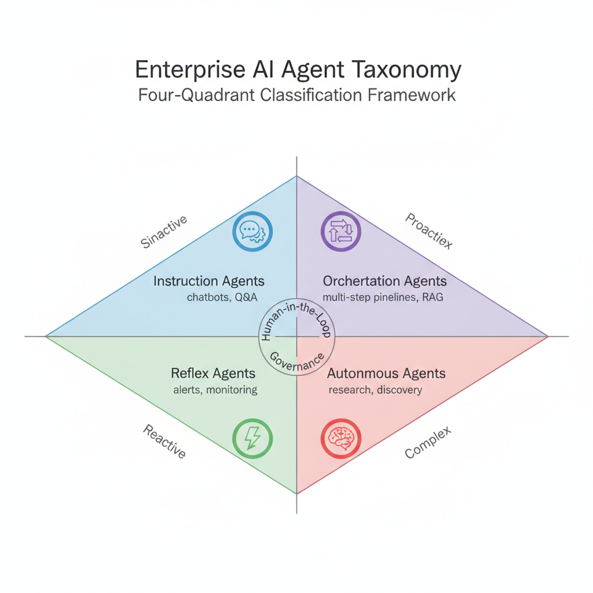
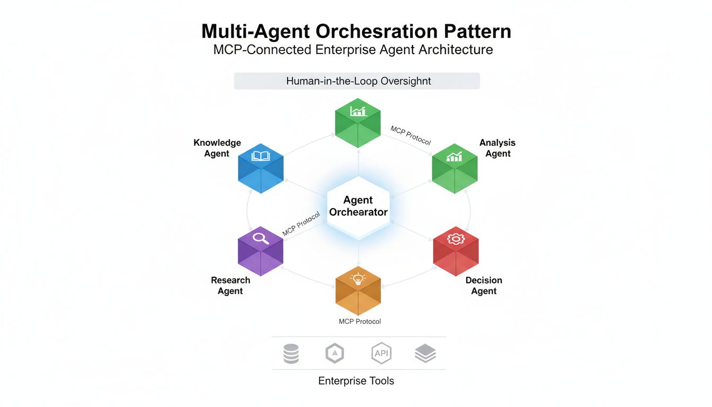
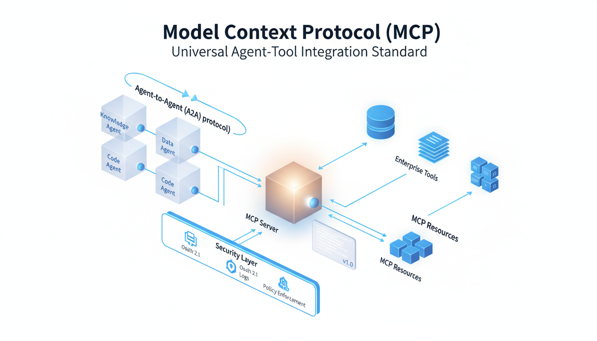

Agentic AI & Multi-Agent Orchestration
Enterprise agent architecture patterns for 2026: multi-agent orchestration, Model Context Protocol (MCP), sovereign agent deployment, and strategic frameworks from BCG, Gartner, and McKinsey. From constrained task agents to autonomous research systems.
1. Enterprise Agent Taxonomy
No single agent taxonomy has emerged as an industry standard. Enterprises struggle with classification. Synthesizing frameworks from BCG, Gartner, Red Hat, and Diginomica, we propose a four-quadrant model that maps agent capability against orchestration complexity.
BCG's AgentKit uses "Action Plans"—predefined decision trees that improve reliability over traditional ReAct agents. Enterprise production systems favor governed autonomy: agents with clear boundaries, audit trails, and human escalation paths. Fully autonomous agents remain niche in 2026.
Source: BCG AgentKit GitHub
Enterprise Function Types
| Agent Type | Function | Cloud Service | Example Use Case |
|---|---|---|---|
| Document AI | Extraction, classification, summarization | OCI Document Understanding, GenAI | Invoice processing, contract analysis |
| Decision AI | Recommendations, approvals, risk scoring | OCI GenAI + Data Science | Clinical decision support, credit scoring |
| Database AI | Query generation, data analysis | Select AI Agent (Database 26ai) | Natural language analytics, anomaly detection |
| Conversational AI | Dialog, co-pilots, assistants | ODA, OCI GenAI Agents Service | Clinical co-pilots, customer service |
| Unstructured AI | Vision, audio, multimodal | OCI Vision, Cohere Command A Vision | Medical imaging, quality inspection |
2. Multi-Agent Orchestration Architecture
Single-agent systems are table stakes. Competitive advantage in 2026 comes from multi-agent orchestration—the ability to coordinate specialized agents, maintain context across handoffs, and enforce enterprise policies at scale.
Reference Agent Team
Orchestration Platform Requirements
- Agent Coordination: Route tasks to specialized agents based on capability matching
- Context Management: Maintain shared context across agent handoffs without data loss
- Policy Enforcement: Apply enterprise policies (data access, approval chains) at orchestration layer
- Failure Handling: Graceful degradation when individual agents fail; automatic retry and escalation
- Observability: Full audit trail of agent decisions, tool calls, and outcomes
- Human Escalation: Configurable thresholds for when to involve human decision-makers
3. Model Context Protocol (MCP) Integration
MCP is the emerging standard for connecting AI agents to enterprise tools. Think of it as "OpenAPI for AI agents"—a universal protocol that lets any agent interact with any tool through a standardized interface.
MCP Architecture Components
| Component | Function | Implementation |
|---|---|---|
| MCP Server | Exposes enterprise tools as agent-accessible resources | Oracle Integration Cloud one-click conversion, custom servers |
| MCP Client | Agent-side protocol handler for tool discovery and invocation | Built into Select AI Agent, Claude, custom agents |
| Agent Cards | JSON metadata enabling agent-to-agent discovery | schemaVersion, capabilities, authentication, supported message parts |
| A2A Protocol | Agent-to-Agent communication for distributed orchestration | Complementary to MCP; enables peer agent coordination |
Oracle MCP Integration
Oracle Integration Cloud (OIC) now supports MCP natively, enabling customers to convert existing integrations into MCP servers with a single click. This means any MCP-compatible agent can immediately invoke trusted enterprise integrations as tools.
Oracle AI Database 26ai includes a fully managed, multi-tenant MCP server built into Autonomous AI Database—no setup required. Select AI Agent can define, run, and govern agents directly inside the database using in-database tools, external REST APIs, or MCP servers.
Agent Cards are emerging JSON-based specifications that serve as machine-readable metadata for agents. They enable automatic discovery, authentication, and interoperability in distributed multi-agent ecosystems. Schema includes: name, capabilities, authentication requirements, supported protocols (A2A, MCP), and message part types.
4. Strategic Frameworks: BCG DRI & FAST
BCG has developed complementary frameworks for enterprise AI agent adoption that map directly to cloud platform maturity stages.
DRI Framework: Deploy, Reshape, Invent
| Play | Strategy | Cloud Mapping | Agent Example |
|---|---|---|---|
| Deploy | Adopt off-the-shelf AI tools quickly | Managed GenAI Service endpoints | Meeting summarizers, copilots, Q&A chatbots |
| Reshape | Reimagine workflows for transformative ROI | Kubernetes (OKE) + AI Blueprints + custom pipelines | Clinical workflow automation, supply chain optimization |
| Invent | Create new revenue streams and offerings | Dedicated AI Clusters + custom model hosting | Drug discovery platforms, autonomous research |
FAST Framework: Agent Safety & Governance
BCG's FAST framework addresses the governance gap that Deloitte reports affects 80% of enterprises deploying agents. Only 1 in 5 companies have mature agent oversight.
| Capability | Purpose | Implementation |
|---|---|---|
| Behavior Constraints | Define what agents can and cannot do | Action Plans, policy rules, tool whitelists |
| Audit Trails | Complete record of agent decisions and actions | OCI Audit + structured logging + decision traces |
| Human Escalation | Configurable thresholds for human involvement | Confidence scoring, approval workflows, alerts |
| Policy Enforcement | Enterprise rules applied to all agent operations | Database security policies, RBAC, data access controls |
| Failure Handling | Graceful degradation and recovery | Circuit breakers, retry logic, fallback agents |
5. Sovereign Agent Deployment: Private AI Agent Factory
For enterprises with data sovereignty requirements, the Oracle Private AI Agent Factory provides a packaged builder and deployment framework that runs in customer-controlled environments.
Pre-Built Agent Types
| Agent | Capability | Use Case |
|---|---|---|
| Knowledge Agent | RAG over enterprise documents with vector search | Policy lookup, compliance Q&A, technical support |
| Data Analysis Agent | SQL generation and structured data analysis | Business intelligence, anomaly detection, reporting |
| Deep Research Agent | Multi-source research with synthesis | Market research, competitive analysis, scientific literature |
Security Architecture
- Data never leaves customer tenancy—agents execute inside controlled environments
- Container-based deployment—runs in any environment customers control
- Private AI services for controlled LLM access without external data sharing
- Database security policies automatically apply to all agent operations
Healthcare Vertical: First Mover in Agentic AI
BCG's January 2026 partnership with Hippocratic AI validates healthcare as the leading vertical for enterprise agent adoption. Key applications: clinical co-pilots for diagnostics, ambient AI scribes for EHR documentation, drug discovery workflows, and precision medicine agents.
Gartner predicts 40% of enterprise applications will feature task-specific AI agents by end of 2026, up from less than 5% in 2025. The autonomous AI agent market is projected to reach $8.5B by 2026 and $35B by 2030. Currently, 23% of enterprises are actively scaling agent deployments.
Sources & References
- BCG AgentKit - Open-source agent framework
- BCG AI Agents - Enterprise capabilities
- BCG: Agents Accelerate AI Value - DRI framework
- BCG: Making AI Agents Safe - FAST framework
- BCG + Hippocratic AI - Healthcare partnership
- BCG: AI Agents Transform Healthcare
- Agent Card v1.0 Schema - Specification
- Oracle OIC MCP Integration
- Oracle Private AI Agent Factory
- Gartner: 40% Apps with Agents by 2026
- Deloitte: AI Agent Orchestration 2026
- McKinsey: State of AI 2025